Starry-mouthed nudibranch
Bornella
stellifer
Family Bornellidae
updated
Oct 2019
Where
seen? This small nudibranch is sometimes seen on our some of
our shores, among seagrasses, seaweeds and near reefs. It is more active at night.
Features: 1-3cm long. Body long,
narrow and somewhat cylindrical, pale or white with net-like pattern
of red lines. Two rows of finger-like appendages along the body, not
true cerata. These appendages are usually orange tipped, and protect
feathery white gills, and conical orange rhinophores. The oral tentacles
near its mouth have star-like or hand-like tips. 'Stellifer' means
'star-like'.
It can swim by flexing its long body
from side to side.
What does it eat? It eats small hydroids growing on or under rocks and hard surfaces. |
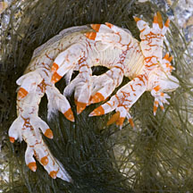
Sisters Islands, Jan 06 |
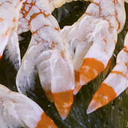
White feathery gills, protected by
the white and orange appendages. |
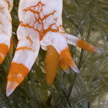
Conical orange rhinophores |
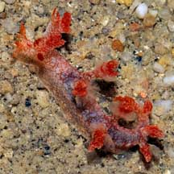
East Coast, Jun 09 |
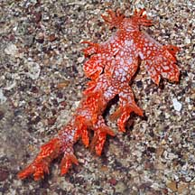
Beting Bronok, Jul 08 |
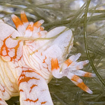
Star-shaped oral tentacles. |
| Starry-mouthed nudibranchs on Singapore shores |
| Other sightings on Singapore shores |
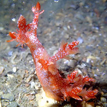
Changi, Jul 20
Photo shared by Jialin Liu on facebook. |
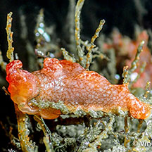
Changi West, Sep 20
Photo shared by Vincent Choo on facebook. |
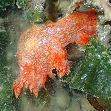
Beting Bronok, Jul 22
Photo shared by Kelvin Yong on facebook. |
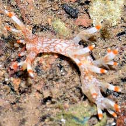
Berlayar Creek, Oct 21
Photo shared by Loh Kok Sheng on facebook. |
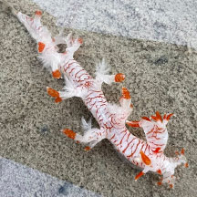
Seringat-Kias, Nov 25
Photo
shared by Kelvin Yong on facebook |
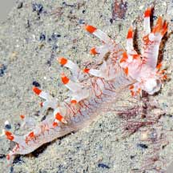
Sentosa Tg Rimau, Jan 22
Photo shared by Loh Kok Sheng on facebook. |
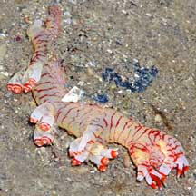
Sisters Island, May 09
Photo shared by James Koh on his
flickr. |
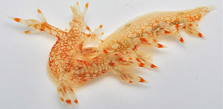
Pulau Jong, Jul 12
Photo shared by Toh Chay Hoon on facebook. |
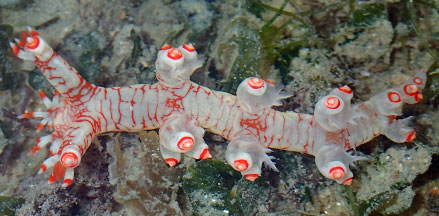
Kusu Island, Apr 17
Photo shared by Toh Chay Hoon on facebook. |
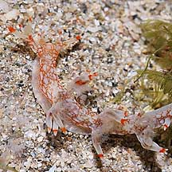
Pulau Tekukor,
May 10
Photo
shared by James Koh on his
blog. |
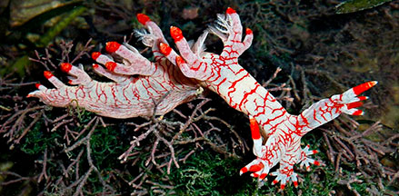
Cyrene Reef, Jun 10
Photo shared by Loh Kok Sheng on flickr. |
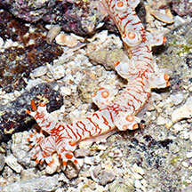
Terumbu Selegie, Jan 17
Photo shared by Loh Kok Sheng on his blog. |
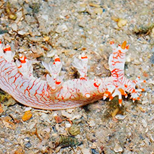
Pulau Hantu, Sep 14
Photo shared by Loh Kok Sheng on his blog. |
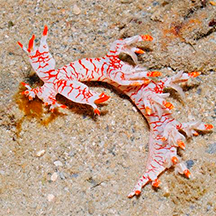
Terumbu Raya, Aug 14
Photo shared by Loh Kok Sheng on his blog. |
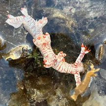
Terumbu Raya, Jul 25
Photo shared by Jayden Kang on facebook. |
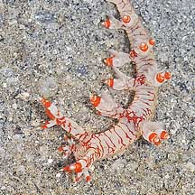
Beting Bemban Besar, May 10
Photo shared by James Koh on his
blog. |
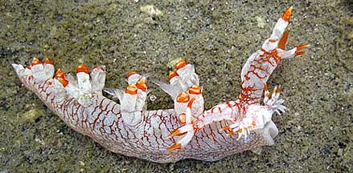
Terumbu Pempang Darat, Jun 10
Photo shared by James Koh on his
blog. |
Links
References
- Tan Siong
Kiat and Henrietta P. M. Woo, 2010 Preliminary
Checklist of The Molluscs of Singapore (pdf), Raffles
Museum of Biodiversity Research, National University of Singapore.
- Debelius,
Helmut, 2001. Nudibranchs
and Sea Snails: Indo-Pacific Field Guide
IKAN-Unterwasserachiv, Frankfurt. 321 pp.
- Wells, Fred
E. and Clayton W. Bryce. 2000. Slugs
of Western Australia: A guide to the species from the Indian to
West Pacific Oceans.
Western Australian Museum. 184 pp.
- Coleman,
Neville. 2001. 1001
Nudibranchs: Catalogue of Indo-Pacific Sea Slugs. Neville
Coleman's Underwater Geographic Pty Ltd, Australia.144pp.
- Coleman,
Neville, 1989. Nudibranchs
of the South Pacific Vol 1. 64 pp.
|
|
|